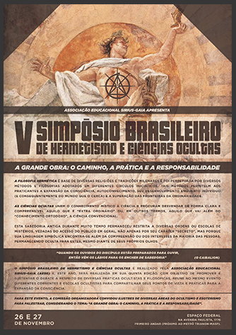

		<div class="main-container" id="eventos">
			<div class="main wrapper clearfix">
				<article>
					<h1>V Simpósio Brasileiro<br/>
					de Hermetismo e Ciências Ocultas</h1>
					<p>O Simpósio Brasileiro de Hermetismo e Ciências Ocultas é realizado pela Associação Educacional Sirius-Gaia (AESG) e, este ano, será realizada em
					sua quinta edição.<br/>
					Com objetivo de promover e sustentar o debate a respeito de diversas práticas ocultistas e filosóficas, reune no mesmo evento
					diferentes correntes e Escolas Ocultistas para compartilhar seus pontos de vista e práticas para a expansão da consciência.</p>
					<p>Em 2016, o evento ocorrerá na cidade de São Paulo, nos dias 26 e 27 de novembro, no Espaço Federal, na avenida Paulista, 1776, primeiro andar
					(próximo ao metrô Trianon-Masp).</p>
					<p>Para este evento, a comissão organizadora convidou ilustres de diversas áreas do ocultismo e esoterismo para palestrar, considerando o tema:</p>
					<strong>
						"A Grande Obra: O caminho,<br/>
						a prática e a responsabilidade".
					</strong>
					<p class="button-eventos-p">
						<a href="http://simposiohermetismo.com.br" target="_blank" class="button-eventos" title="Acesse o site do Simpósio aqui">Acesse o site do Simpósio aqui</a>
					</p>
				</article>

				<aside>
					
				</aside>

			</div> <!-- #main -->
		</div> <!-- #main-container -->
